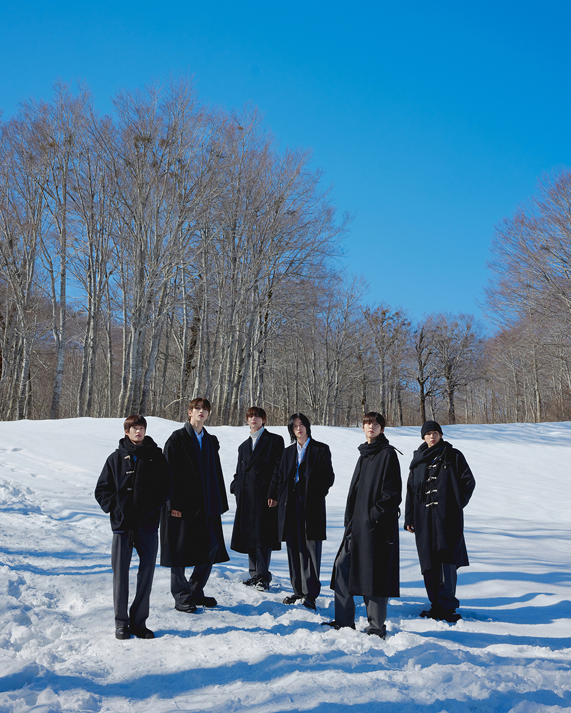
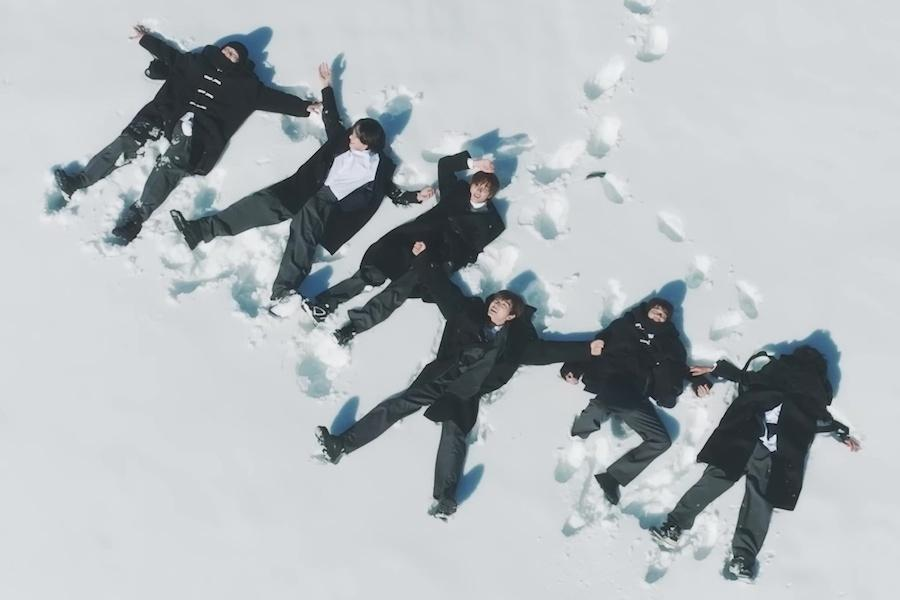
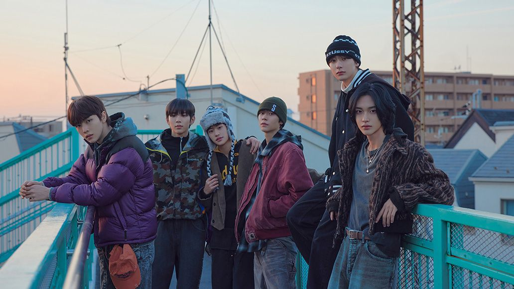
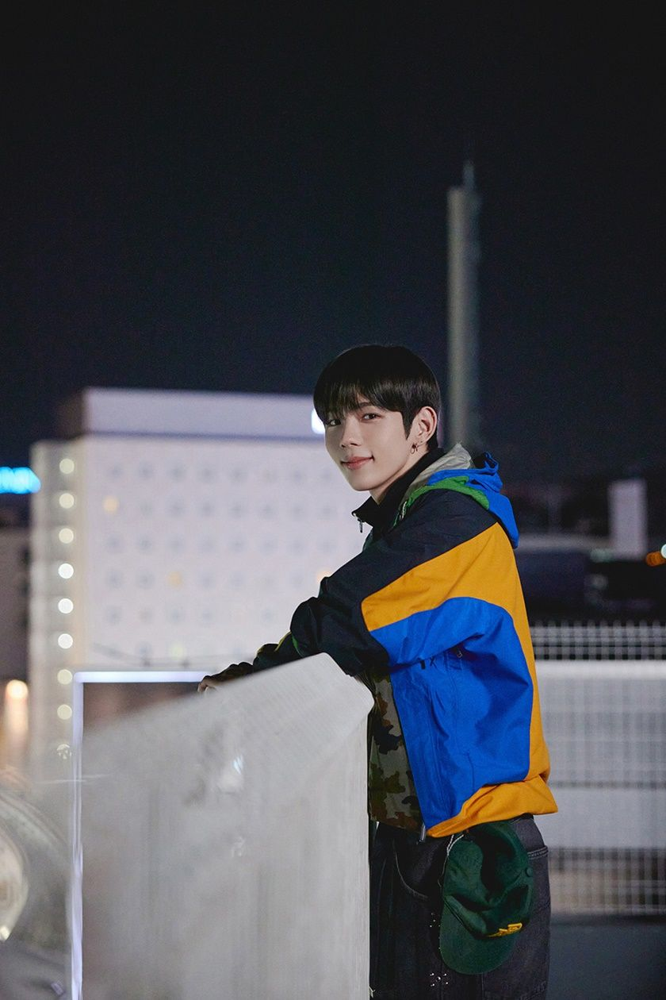
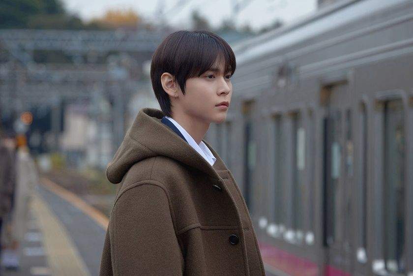
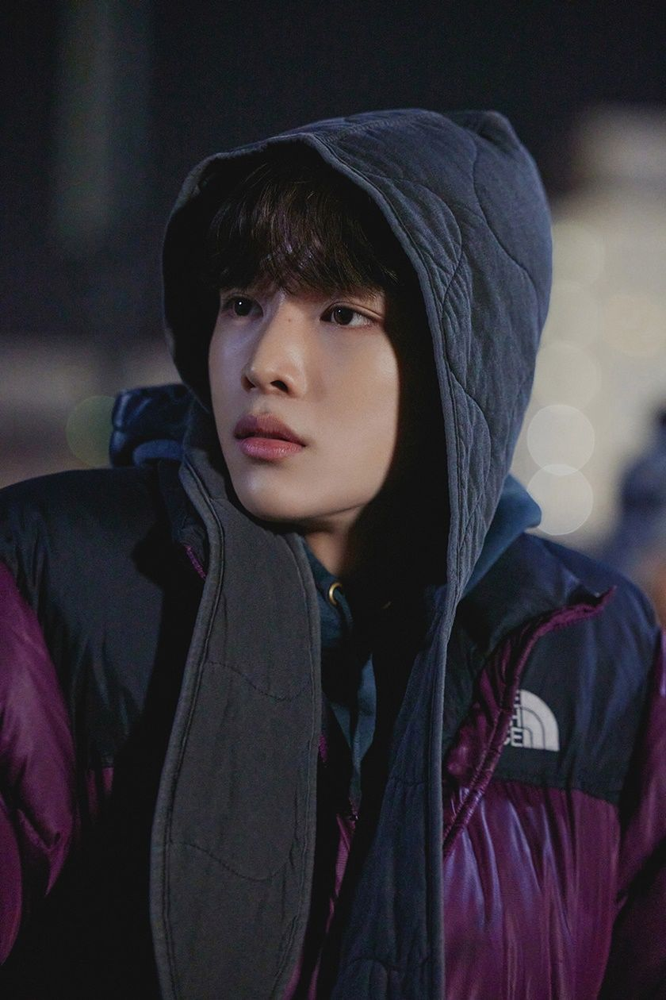
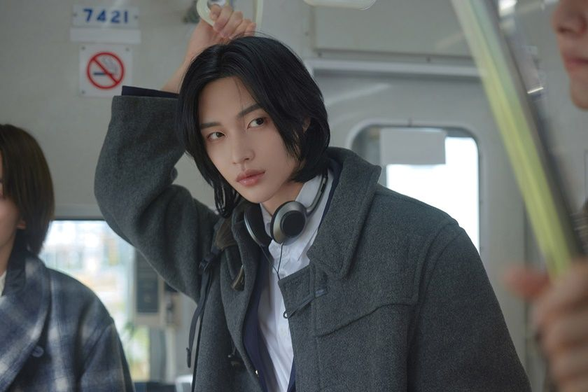
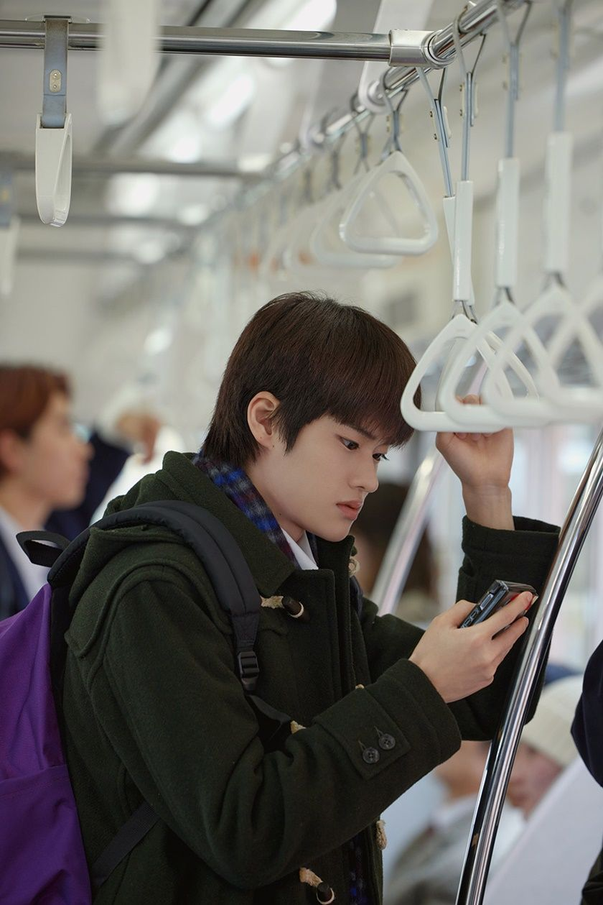
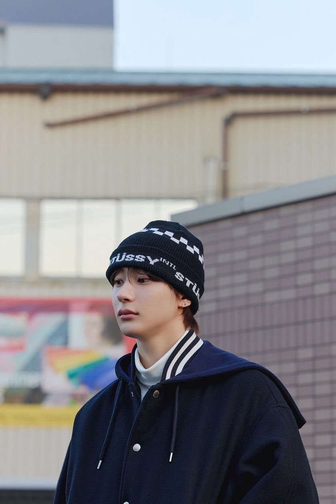

HOME · 관계
잘 보이려 애쓰던 표정이 풀리고, 내 속도로 말하고 움직일 수 있는 곁. 팬·친구·연인·동료 각자의 경험이 들어올 수 있는 의미로 설정한다.

너에게 닿아,
나로 돌아오다.
나를 설명할 필요가 없는 관계.
그 곁에서 시작되는, 가장 나다운 겨울.
기획 이유영 LEE YOOYOUNG
THE ALBUM THESIS
HOME은
나를 설명할 필요가 없는 관계.
LONG WAY는 타인의 기대를 지나 나다운 모습을 알아가는 시간이다. 서로의 어색함까지 받아들이는 다섯 장면을 통해, 긴장이 풀리고 자기 리듬을 되찾는 감정을 설계한다.
타이틀은 112 BPM 팝 R&B. 따라 걷고 따라 부를 수 있는 후렴을 중심에 둔다. 겨울의 서정과 6인 퍼포먼스를 한 곡 안에서 동시에 확보한다.
THREE PLANNING DECISIONS
팝 R&B의 선율 훅과 두 걸음 모티프로 감정 전달·가창·퍼포먼스의 접점을 설계한다.
타이틀 선정 근거 02 / SEQUENCE앞선 세 곡은 리듬으로 관계를 열고, 뒤의 두 곡은 가까운 보컬과 화음으로 편안함을 남긴다.
트랙별 사운드·심사 기준 03 / EXECUTION음악·영상·피지컬 일정을 함께 설계한다. 기본 10,000장 가정의 제작비는 2억 6,400만원이다.
예산 가정·성과 기준이유영 · 독립 기획기획 범위: 리서치·트랙 브리프·비주얼 방향·발매 설계·웹 구성기여 범위 보기 ↗
곡명·템포·기간·금액은 기획 가정이다. 예산에는 부가세·권리 대가·아티스트 비용·물류·유통 비용이 별도다.
HOME / A RELATIONSHIP THAT LETS ME BE MYSELF
잘 보이려 애쓰던 표정이 풀리고, 내 속도로 말하고 움직일 수 있는 곁. 팬·친구·연인·동료 각자의 경험이 들어올 수 있는 의미로 설정한다.
여러 기대와 낯선 감정을 지나 나다운 모습을 알아가는 시간. 타이틀은 서로를 발견하는 순간, 엔딩은 그 관계를 믿게 되는 순간을 맡는다.
차가운 공기 속에서 체온과 작은 배려가 선명해지는 계절. 같은 거리에서도 눈맞춤·풀리는 어깨·함께 맞춘 박자가 온기를 드러낸다.
작가 리드: 화자가 먼저 눈을 맞추고 자기 속도를 선택한다. 벌스는 작은 행동, 프리코러스는 망설임, 후렴은 “네 곁에서 편안한 나”의 발견을 담는다. “너만이 나를 구한다”는 의존적 결론과 문·열쇠·주소 중심의 귀가 묘사는 제외한다.
발매 이력은 사실로, 이번 앨범의 방향은 기획자의 해석으로 구분한다.
확인된 사실공식 보도자료는 피아노 리프·풍부한 보컬·첫사랑을 곡의 중심으로 설명한다. 쇼타로·원빈이 후렴 안무에 참여했다. [1]
이번 기획의 판단감정을 일상적인 행동으로 압축하는 구조를 계승한다. 새 타이틀의 행동은 ‘시선을 피하던 사람이 먼저 눈을 맞추기’다. 첫사랑의 긴박함 이후, 가까운 관계 안에서 편안해지는 감정을 새 주제로 제안한다.
확인된 사실동방신기 곡의 리메이크. 공식 앨범 소개는 도입부 아카펠라와 산뜻한 보컬, Y2K·뉴트로 무드를 설명한다. [2]
이번 기획의 판단후반 2곡에서 호흡·화음·낮은 악기 밀도를 활용한다. 겨울의 따뜻함은 보컬 질감에서 확보한다.
확인된 사실6월 15일 발매한 6곡 미니앨범. 타이틀은 ‘Do your dance’. Apple Music은 앨범의 힙합 확장과 타이틀의 왜곡된 808 베이스라인을 설명했다. [3] [4]
이번 기획의 판단1~3번 트랙에 리듬의 추진력을 둔다. 2026년의 활동 이후에도 무대에서 수행할 수 있는 겨울 음악을 제안한다.
일본 싱글 《Sunburst》는 2026.08.26 발매. [5] 국내 겨울 EP는 별도 가정이며, 실제 투어·컴백·프로모션 일정과의 충돌 여부를 기획 승인 전에 확인한다.
POSITIONING STATEMENT
너에게 닿아,
나로 돌아오는 겨울.

해방 → 발견 → 장난 → 친밀 → 신뢰.
곡을 선택하면 감정·사운드·심사 기준이 열린다.
5곡 모두 창작 브리프 · 음원 미제작
TARGET RUN TIME / 15:34트랙을 좌우로 넘겨 선택

네 앞에서는,
괜찮은 척하지 않아도.
네 앞에서는, 괜찮은 척하던 표정이 풀린다.
낯선 기대에 맞추며 지낸 긴 시간을 지나, 네 곁에서 자연스러운 나를 발견한다. 벌스의 짧게 끊긴 프레이즈가 후렴의 열린 선율로 풀리며, 경계에서 편안함으로 변하는 감정을 들려준다.
해방 → 발견 → 신뢰
LISTENING REFERENCES / 기존 발매곡
레퍼런스는 구조·질감 분석용. 멜로디·가사·샘플 차용은 전제하지 않는다. 신곡 음원은 아직 제작하지 않았다.
겨울 정서·RIIZE 적합성·퍼포먼스·캠페인 확장성을 함께 검토한다. 아래 평가는 기획 브리프 비교이며 실제 데모의 점수나 심사 결과가 아니다.
좌우로 밀어 표 전체 보기
| 기준 | LONG WAY HOME 채택 | ONE MORE BLOCK | WINDOW SEAT |
|---|---|---|---|
| 감정의 전달 | ‘네 앞에서 편해지는 나’라는 중심 문장 | 장난·속도감이 앞서는 구성 | 친밀한 감정 표현에 유리 |
| 무대 설계 | 112 BPM 스텝 + 선율 훅 | 128 BPM 리듬·군무에 강점 | 보컬 라이브형 무대에 적합 |
| 겨울 재청취 | 기대·관계·소속감의 일상 감정 | 활기 있는 서브 캠페인 역할 | 밤·실내 청취 맥락에 집중 |
| 콘텐츠 확장 | 보폭·눈맞춤·표정 변화·감정 경로 | 댄스 릴레이 중심 | 보컬 클립·편지형 콘텐츠 |
| 최종 배치 | 타이틀 + 메인 MV | 후속 퍼포먼스 수록곡 | 보컬 콘텐츠 수록곡 |
공식 포지션이나 확정 파트 배분을 주장하지 않는다. 아래는 타이틀 제작을 위한 배치 가설이며 실제 녹음·안무 테스트 후 조정한다.

8마디 리듬 구간과 스텝 모티프의 시작을 제안한다. 후렴 가창 직전에는 큰 상체 동작을 줄인다.

첫 벌스의 대화체 가사와 장면 소개를 배치한다. 가사 전달력과 편안한 키를 우선 확인한다.

2절의 리듬형 파트와 군무 전환을 제안한다. 보컬·랩 중 명료한 전달 방식을 테스트한다.

후렴 첫 구절과 다음 멤버로 넘기는 모티프를 배치한다. 키를 달리한 2개 가이드를 비교한다.

프리코러스의 상승과 마지막 후렴의 보컬 변주를 제안한다. 애드리브가 주선율을 가리는지 확인한다.

브리지와 아웃트로의 낮은 악기 밀도를 활용한다. 근접한 보컬 질감과 그룹 화음을 비교한다.
PORTRAIT REFERENCE / Love 119 · 기존 프로모션 이미지 · 게재: 지니뮤직 매거진
각자의 박자로 걷던 두 사람이 두 걸음 뒤 서로를 보고 어깨의 긴장을 푼다. 마지막 박에는 각자의 작은 동작을 남긴다. ‘곁에서 편안해지는 나’를 4마디 모티프(4/4·112 BPM 기준 약 9초)로 표현한다. 8마디 퍼포먼스에서는 이를 두 번 변주하며 개인의 표정을 살린다.
키 안무 제안 · 실제 안무가 협의 전 · 촬영은 통제된 세트·보행 공간 기준같은 겨울 거리에서 멀어진 시선이 마주친다.
인물의 거리와 표정이 가까워질수록 빛의 온도가 달라진다.
35mm 환경 인물과 85mm 클로즈업을 교차한다. 초반에는 반사면·분리 프레임으로 시선을 엇갈리게 하고, 후반에는 눈높이의 공동 프레임과 긴 호흡을 사용한다.
울 코트·니트·데님·머플러. 여섯 명의 실루엣을 다르게 구성하고 블루·차콜·아이보리 톤을 공유한다.
시간표·경로·짧은 메모를 그래픽 언어로 사용한다. GUARD UP → SEEN → AT EASE의 감정 경로를 표시한다. 종착 표식은 서로의 시선이 만나는 교차점이다.
겨울밤의 여섯 인물이 서로 앞에서 경계를 푸는 과정을 따라간다. 우정·사랑·동료 관계로 읽을 수 있게 상대의 정체를 열어 두고, 시선·표정·거리의 변화를 감정의 증거로 사용한다.
OPENING / 환경음 → 킥 진입
유리창에 비친 얼굴을 정돈하는 여섯 인물. 어긋난 시선과 분리된 프레임으로 하루의 긴장을 보여준다. 후렴의 핵심 선율을 짧은 악기 모티프로 먼저 들려주고, 20초 안에 킥과 보컬로 연결한다.
기존 사진으로 제시하는 감정·구도 레퍼런스.
장면 설명은 신규 MV를 위한 창작 콘티다.
실외 1개 구역 + 실내 세트 1개를 기본안으로 둔다. 겨울 날씨·일조시간에 대응하는 실내 대체 동선과 배우·스태프 보온 계획을 프리프로덕션에 포함한다.
공통 콘텐츠를 품질 있게 제작하는 메인 포토북 1종을 기본안으로 둔다. 아래 모형은 표지·CD·감정 기록용 포트레이트 카드의 일부 구성을 보여준다. 실물 제작 전의 디지털 디자인 시안이다.
LONG
WAY
HOME.
DIGITAL MOCKUP / PHOTOBOOK + CD + PORTRAIT CARD
사이즈·페이지·사양은 제작사 견적과 샘플 검수 후 확정. 재질·특수 인쇄·랜덤 구성 추가는 비용·납기를 재검토한다.
D는 실제 발매일 확정 후 적용한다. 캠페인은 앨범의 시간 흐름을 따른다.
LONG WAY
HOME.
어떤 순간에
가장
나다워져?
한 문장이
피드에서 무대까지
이어지도록.
앨범명·겨울밤 그룹 이미지 공개. “어떤 순간에 가장 나다워져?”라는 질문과 엇갈린 시선의 티저로 시작한다.
타이틀 로고 / 그룹·개인 콘셉트 이미지 / 15초 무드 클립5곡 트랙리스트와 하이라이트를 공개한다. 보컬 한 소절과 리듬 포인트를 분리해 소개한다.
트랙리스트 / 하이라이트 메들리 / 보컬 클립 2편후렴 두 걸음 모티프를 공개한 뒤 음원·MV·퍼포먼스를 순차 공개한다.
MV 티저 / D 음원·MV / D+2 퍼포먼스 비디오수록곡 라이브와 비하인드로 청취를 이어간다. 두 걸음 뒤 자신다운 포즈를 남기는 릴레이와 “내가 편안해지는 순간” 한 줄 콘텐츠를 운영한다. 참여자는 인물·위치 공개 없이 음악·취향·일상으로 답할 수 있다.
WINDOW SEAT 라이브 / 비하인드 / UGC 큐레이션하나의 촬영에서 16:9 MV · 9:16 훅 영상 · 1:1 커버 · 스틸컷을 확보한다. 세로 영상의 얼굴·발끝 안전 영역을 촬영 콘티에 함께 표시한다.
좌우로 밀어 표 전체 보기
| 구간 | 작업 | 승인 산출물 |
|---|---|---|
| W1–3 | 리드·데모 수급·후보 리뷰 | 쇼트리스트·권리/가용 여부 확인표 |
| W4–6 | 리비전·가사·보컬 테스트 | 곡 5개·가이드·키/파트·편곡 잠금 |
| W7–9 | 녹음·편집·믹스·마스터 | 최종 오디오·가사·크레딧 대조본 |
| W7–10 병행 | MV·사진·안무·패키지 촬영 | 콘티·가편·색보정·인쇄 교정 |
| W11–13 | 피지컬 발주·유통 제출·에셋 검수 | 샘플 승인·메타데이터·캠페인 캘린더 |
| W14–16 | 티징·미디어 준비·공개 파일 최종 점검 | 공개 파일·예약 링크·권한·모니터링 담당표 승인 |
| D / W17 시작 | 음원·MV 공개 및 피지컬 발매 | 공개·판매 링크 확인 / 납품·출고 상태 점검 |
2026.09.28 착수 → 16주 준비 → 2027.01.18 공개를 예시 일정으로 설정한다. 실제 활동 일정·음원 확보·제조 납기를 확인한 뒤 발매일을 재승인한다. 일정 단축 시에는 곡 수·촬영·생산 범위와 품질 기준을 함께 재검토한다.
내부 예산·시장 견적을 확보하지 않은 기획 시뮬레이션이다. 음악 권리 대가·아티스트 비용·유통 조건은 개별 계약 확인이 필요하다.
₩264,000,000
고정 제작비 + 초도 피지컬 + 예비비 10%
초도 수량은 판매 예측이 아니다. 예약 주문·유통사 발주량 확인 후 결정한다. 장당 제조비 6,000원 가정, 규모별 단가 변화 미반영. 부가세·권리 선급/로열티·아티스트 인건비·물류·반품·유통 수수료 별도.
좌우로 밀어 표 전체 보기
| 항목 | 산정 가정 | 금액 |
|---|---|---|
| 음악 제작·녹음·믹스·마스터 | 5곡 × 800만원 | 4,000만원 |
| MV·퍼포먼스 촬영 | 공동 촬영 기반 1식 | 7,000만원 |
| 사진·디자인·콘텐츠 후반 | 재킷·패키지·세로 에셋 1식 | 2,500만원 |
| 안무·스타일링·현장 운영 | 안무 개발·촬영 준비 1식 | 2,000만원 |
| 프로모션 집행 | 시딩·유료 매체 테스트 예산 | 2,500만원 |
| 피지컬 제조 | 10,000장 × 6,000원 | 6,000만원 |
| 예비비 | 상기 소계 × 10% | 2,400만원 |
| 합계 | 발주 전 항목별 견적 대조 | 2억 6,400만원 |
실제 기준 데이터가 없으므로 절대 목표·성과 수치는 제시하지 않는다. 캠페인 승인 시 기준선·집계 기간·담당자를 잠근다.
본 프로젝트에서 저는 RIIZE의 발매 맥락을 검토하고, 겨울 EP의 포지셔닝·5트랙 브리프·타이틀 선정 기준·보컬 배치 가설·MV·패키지·캠페인·예산 시뮬레이션을 설계했습니다.
기획 범위는 리서치와 앨범 기획·웹 제안서 구성입니다. 리서치·초안·웹 구현에는 AI 보조를 활용했습니다. 실제 음원 제작·아티스트 디렉팅·회사 승인·집행 성과는 이 프로젝트의 경력으로 기재하지 않습니다.
이유영 A&R / ALBUM PLANNING
공식 발매 정보와 크레딧을 바탕으로 기획자의 해석을 구성했다. 각 출처는 사실 확인 범위에만 사용하며, 향후 발매 계획을 보증하지 않는다.
인용 사진·영상·RIIZE 명칭의 권리는 각 권리자에게 있다. 사진은 기존 활동의 시각적 레퍼런스이며 제안 앨범의 신규 촬영물로 주장하지 않는다. 사이트의 창작 기획·레이아웃과 인용 자료를 구분한다.